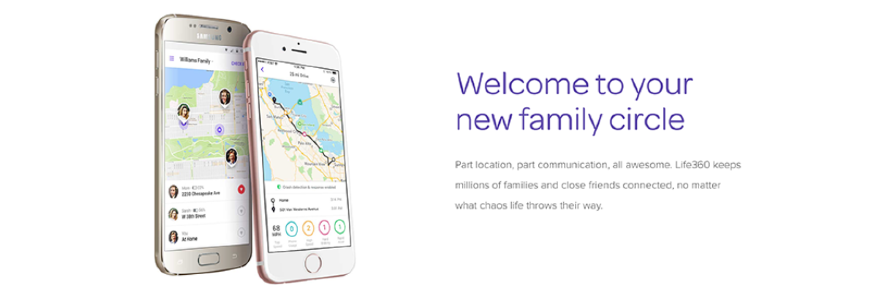

Creative Circle
I’ve been a UX researcher at Creative Circle since December 2017.
I'm working for my client, Life360 in San Francisco to conduct usability tests for Life360, a mobile family locator.

I plan and design in-person/remote user studies focusing on target user groups to enhance user engagement and to increase in-app purchases for the premeum features.
Short note for you :)
To see how effective the swipe-thourgh tutorial during the setup process is to understand Life360 mobile app,
I've been looking for
usability test participants for 45 minutes in-person interview in South Bay Area (Mountain View ~ San Jose).
If you are chosen to participate, you will get a $50 Target gift card as a reward. The participants should be parents of teen drivers or teenagers who has a provisional driver's permit or license. If you are interested, please click and sign up
here!